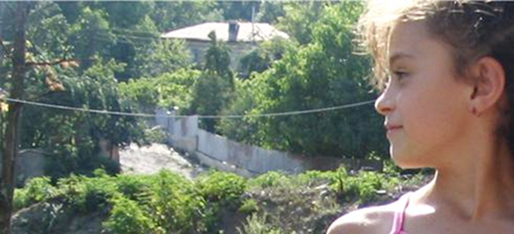
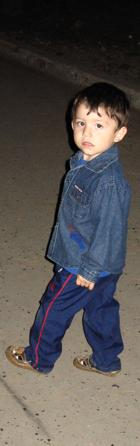

Джава, Южная Осетия

Цхинвал
Южная Осетия
Южная Осетия
СЛОЖНЫЙ ВОПРОС - 1
Организаторы Южнокавказского фестиваля документальных фильмов «Я - Человек», который в начале сентября проходил в Южной Осетии, любезно согласились взять меня в попутчики. Главный импровизатор всей нашей деятельности (имею ввиду «Альтернативный старт») и одновременно член жюри фестиваля, Георгий Ванян, мотивируя тем, что Абхазия в двух шагах от ЮО, решительно настоял на том, что надо повторить прошлогодний маршрут: Тбилиси - Цхинвал - Гори - Зугдиди - Сухум - Зугдиди - Тбилиси. Я тут же привела несколько возражений на тему невозможности для нас отсутствовать так долго и забросить все дела. Сама же очень хотела ехать, и поэтому мои неуклюжие контраргументы плавно преобразились в оправдательную цель: надо ехать и сделать ряд ярких интервью, написать подробный путевой дневник и серию серьезных аналитических статей.
Взяла диктофон, со всеми причиндалами, включая зарядочник для батареек и загрузочный диск, чтобы иметь возможность опорожнить память записывающего устройства в любой ближайший компьютер и с него на флешку. И еще толстую тетрадь, ручку. Но, увы, пришлось убедиться в очередной раз, что журналист из меня никакой – в течение 23-х дней путешествия ни разу не включила диктофон, и тетрадь осталась нетронутой, только между страницами приютились бумажки с телефонами и мейлами новых друзей. Я не в накладе.
Теперь пишу по памяти. Так уж получилось.
Впрочем, насчет нетронутой тетради чуть преувеличила. Одна страница в ней все же заполнена. Это было в Кваиса, где полным ходом шло строительство – благоустраивался ожидающий со дня на день статуса города поселок, и поблизости буквально на глазах прокладывался газопровод вместе с дорогой. Гостиница была на ремонте, поэтому мы провели два с половиной дня в одной из пятиэтажек. В квартире давно никто не жил, никаких личных вещей, только мебель и посуда, но все такое родное, что казалось, я у себя, в Ереване, в недалеком прошлом, когда поступил первый сигнал-надежда на благополучие – возобновилась круглосуточная подача электроэнергии населению. Удивительно: энергично выживающие в нечеловеческих условиях люди вдруг оказались бессильными перед сгоревшей проводкой, прорвавшимися трубами, закопченными стенами и потолками. Тогда, когда казалось бы самое трудное уже позади, уехали многие, а кто остался, пошел на все, лишь бы сделать евроремонт. К меньшинству, которое нагрело руки на войне и экономическом кризисе, присоединился весь народ, все записались в партию «деньги не пахнут» – так и живем до сих пор.
Так вот в Кваиса, когда мы дружно обыскивали квартиру на предмет нахождения работающей розетки, я заглянула за телевизор, розетки не было, но там с пола уставился на меня коричневый том Сталина... Поздно вечером сижу на кухне и аккуратно переписываю из книги в толстую тетрадь (опять дежавью – совсем недавно миллионы людей точно так же сидели на кухне и строчили конспекты, получая за это членские билеты, дипломы, научные звания, квартиры и зарплаты). Вот что писал Сталин:
«Из всех окраин Российской Федерации Закавказье, кажется, является самым характерным уголком в смысле богатства и разнообразия национального состава. Грузины и русские, армяне и азербайджанские татары, турки и лезгины, осетины и абхазцы,- такова далеко не полная картина национального разнообразия семимиллионного населения Закавказья.
Ни у одной из этих национальных групп нет резко очерченных границ национальной территории, все они живут чересполосно, вперемежку между собой, и не только в городах, но и в деревнях. Этим, собственно, и объясняется, что общая борьба национальных групп Закавказья против центра в России сплошь и рядом заслоняется их ожесточенной борьбой между собой. А это создает весьма «удобную» обстановку для прикрытия классовой борьбы национальными флагами и побрякушками. Другой, не менее характерной чертой Закавказья является его экономическая отсталость. Если не считать Баку, этот промышленный оазис края, движимый главным образом внешним капиталом, то Закавказье представляет аграрную страну с более или менее развитой торговой жизнью по краям, у берегов морей, и с крепкими еще остатками чисто крепостнического уклада в центре. Тифлисская, Елизаветпольская, Бакинская губерния до сих пор изобилуют крепостническими татарскими беками и феодальными грузинскими князьями, владеющими огромными латифундиями, располагающими специальными вооруженными бандами и держащими в своих руках судьбы татарско-армянско-грузинских крестьян.» («Контрреволюционеры Закавказья под маской социализма», «Правда», NN 55 и 56, 26 и 27 марта 1918 г., И.Сталин, Сочинения, том 4, стр 51, Москва, 1953)
Ощущение такое, что здесь есть объяснение тому, что произошло, происходит и будет происходить с нами. Чересполосная жизнь давно уже превратилась в жизнь с национальными флагами и побрякушками. Центр и беки-князья остались.
Никак не укладывается в голове, как могли чересполосно живущие народы «ожесточенно бороться между собой», тем более при наличии беков и князей. Несколько позже большевики-наследники самодержавия определили «национальные территории», раздали всем «флаги и побрякушки». На смену мелким провокациям по разжиганию вражды пришли: культурная политика противопоставления всех народов Закавказья и экономическая политика их полной зависимости от центра. Поскольку все это делалось нашими собственными руками и через наши собственные мозги, злые гении-авторы ушли, но противопоставление друг другу, и как следствие, зависимость от других превратились в привычку. Нами не надо управлять, после распада СССР мы все делаем как надо – уничтожаем себя. Обратим ли этот процесс? Сложный вопрос.
И еще на сталинскую тему. Вокзал в Гори, фигурирующий в «Годо», изменился до неузнаваемости. Ремонт, чистота, компьютеризация. Сотрудники вокзала в униформах любезно помогают сориентироваться откуда и когда именно прибудет поезд - бегать туда-сюда с вещами и прыгать в отъезжающий вагон уже не надо. Правда, обновленный зал ожидания пока на замке, изгнанные оттуда после ремонта бомжи, напившись, по привычке приходят “домой” ночевать и ругаются с сотрудниками вокзала, которые стойко держат оборону. Через прозрачные двери зала ожидания можно видеть одинокого каменного Сталина.
– Вопрос Южной Осетии уже решается. Там скоро будут большие изменения – говорит нам молодой человек, у которого Георгий попросил прикурить в полночь на проспекте Руставели, – Я тоже буду там 17-ого числа, готовится молодежный мирный марш на Цхинвали.
Спрашиваю, почему именно 17-ого, говорит: Точно не знаю, наверно в связи с церковным праздником. Лукавил или нет наш случайный знакомый?
Подозреваю, что про всеосетинский съезд говорить было просто не в тему, ему зачем-то надо было внушить (себе или нам) оптимизм в решении юго-осетинского вопроса. И еще мы услышали: Санакоев, несмотря ни на что (имелась ввиду посредственность политического деятеля) набирает силу, а Кокойты – сдает. Цхинвали в лихорадке и 17-го грядут великие события.
Если честно, мы были обескуражены. Одно дело пресса, другое слышать все от потенциального участника. Спросили, кто финансирует-организует марш, ответил: ряд неправительственных организаций. Мы высказали мнение, что это может быть опасно. Он ответил с энтузиазмом: Да.
Мы вернулись в гостиницу, чтобы утром выехать в Цхинвали и участвовать там на фестивале: с 1 по 11 сентября показывать фильмы на тему мира и прав человека.
– Возможно, нам придется задержаться там до 17-го, – сказала я решительно. Георгий удивленно посмотрел на меня, посягнувшую на его звание великого импровизатора.
Тогда я еще не подозревала, что скоро пойму разницу между Цхинвали и Цхинвалом...
Взяла диктофон, со всеми причиндалами, включая зарядочник для батареек и загрузочный диск, чтобы иметь возможность опорожнить память записывающего устройства в любой ближайший компьютер и с него на флешку. И еще толстую тетрадь, ручку. Но, увы, пришлось убедиться в очередной раз, что журналист из меня никакой – в течение 23-х дней путешествия ни разу не включила диктофон, и тетрадь осталась нетронутой, только между страницами приютились бумажки с телефонами и мейлами новых друзей. Я не в накладе.
Теперь пишу по памяти. Так уж получилось.
ИОСИФ ВИССАРИОНОВИЧ
Впрочем, насчет нетронутой тетради чуть преувеличила. Одна страница в ней все же заполнена. Это было в Кваиса, где полным ходом шло строительство – благоустраивался ожидающий со дня на день статуса города поселок, и поблизости буквально на глазах прокладывался газопровод вместе с дорогой. Гостиница была на ремонте, поэтому мы провели два с половиной дня в одной из пятиэтажек. В квартире давно никто не жил, никаких личных вещей, только мебель и посуда, но все такое родное, что казалось, я у себя, в Ереване, в недалеком прошлом, когда поступил первый сигнал-надежда на благополучие – возобновилась круглосуточная подача электроэнергии населению. Удивительно: энергично выживающие в нечеловеческих условиях люди вдруг оказались бессильными перед сгоревшей проводкой, прорвавшимися трубами, закопченными стенами и потолками. Тогда, когда казалось бы самое трудное уже позади, уехали многие, а кто остался, пошел на все, лишь бы сделать евроремонт. К меньшинству, которое нагрело руки на войне и экономическом кризисе, присоединился весь народ, все записались в партию «деньги не пахнут» – так и живем до сих пор.
Так вот в Кваиса, когда мы дружно обыскивали квартиру на предмет нахождения работающей розетки, я заглянула за телевизор, розетки не было, но там с пола уставился на меня коричневый том Сталина... Поздно вечером сижу на кухне и аккуратно переписываю из книги в толстую тетрадь (опять дежавью – совсем недавно миллионы людей точно так же сидели на кухне и строчили конспекты, получая за это членские билеты, дипломы, научные звания, квартиры и зарплаты). Вот что писал Сталин:
«Из всех окраин Российской Федерации Закавказье, кажется, является самым характерным уголком в смысле богатства и разнообразия национального состава. Грузины и русские, армяне и азербайджанские татары, турки и лезгины, осетины и абхазцы,- такова далеко не полная картина национального разнообразия семимиллионного населения Закавказья.
Ни у одной из этих национальных групп нет резко очерченных границ национальной территории, все они живут чересполосно, вперемежку между собой, и не только в городах, но и в деревнях. Этим, собственно, и объясняется, что общая борьба национальных групп Закавказья против центра в России сплошь и рядом заслоняется их ожесточенной борьбой между собой. А это создает весьма «удобную» обстановку для прикрытия классовой борьбы национальными флагами и побрякушками. Другой, не менее характерной чертой Закавказья является его экономическая отсталость. Если не считать Баку, этот промышленный оазис края, движимый главным образом внешним капиталом, то Закавказье представляет аграрную страну с более или менее развитой торговой жизнью по краям, у берегов морей, и с крепкими еще остатками чисто крепостнического уклада в центре. Тифлисская, Елизаветпольская, Бакинская губерния до сих пор изобилуют крепостническими татарскими беками и феодальными грузинскими князьями, владеющими огромными латифундиями, располагающими специальными вооруженными бандами и держащими в своих руках судьбы татарско-армянско-грузинских крестьян.» («Контрреволюционеры Закавказья под маской социализма», «Правда», NN 55 и 56, 26 и 27 марта 1918 г., И.Сталин, Сочинения, том 4, стр 51, Москва, 1953)
Ощущение такое, что здесь есть объяснение тому, что произошло, происходит и будет происходить с нами. Чересполосная жизнь давно уже превратилась в жизнь с национальными флагами и побрякушками. Центр и беки-князья остались.
Никак не укладывается в голове, как могли чересполосно живущие народы «ожесточенно бороться между собой», тем более при наличии беков и князей. Несколько позже большевики-наследники самодержавия определили «национальные территории», раздали всем «флаги и побрякушки». На смену мелким провокациям по разжиганию вражды пришли: культурная политика противопоставления всех народов Закавказья и экономическая политика их полной зависимости от центра. Поскольку все это делалось нашими собственными руками и через наши собственные мозги, злые гении-авторы ушли, но противопоставление друг другу, и как следствие, зависимость от других превратились в привычку. Нами не надо управлять, после распада СССР мы все делаем как надо – уничтожаем себя. Обратим ли этот процесс? Сложный вопрос.
И еще на сталинскую тему. Вокзал в Гори, фигурирующий в «Годо», изменился до неузнаваемости. Ремонт, чистота, компьютеризация. Сотрудники вокзала в униформах любезно помогают сориентироваться откуда и когда именно прибудет поезд - бегать туда-сюда с вещами и прыгать в отъезжающий вагон уже не надо. Правда, обновленный зал ожидания пока на замке, изгнанные оттуда после ремонта бомжи, напившись, по привычке приходят “домой” ночевать и ругаются с сотрудниками вокзала, которые стойко держат оборону. Через прозрачные двери зала ожидания можно видеть одинокого каменного Сталина.
ТБИЛИСИ : ПОСЛЕДНИЙ ДЕНЬ ЛЕТА
– Вопрос Южной Осетии уже решается. Там скоро будут большие изменения – говорит нам молодой человек, у которого Георгий попросил прикурить в полночь на проспекте Руставели, – Я тоже буду там 17-ого числа, готовится молодежный мирный марш на Цхинвали.
Спрашиваю, почему именно 17-ого, говорит: Точно не знаю, наверно в связи с церковным праздником. Лукавил или нет наш случайный знакомый?
Подозреваю, что про всеосетинский съезд говорить было просто не в тему, ему зачем-то надо было внушить (себе или нам) оптимизм в решении юго-осетинского вопроса. И еще мы услышали: Санакоев, несмотря ни на что (имелась ввиду посредственность политического деятеля) набирает силу, а Кокойты – сдает. Цхинвали в лихорадке и 17-го грядут великие события.
Если честно, мы были обескуражены. Одно дело пресса, другое слышать все от потенциального участника. Спросили, кто финансирует-организует марш, ответил: ряд неправительственных организаций. Мы высказали мнение, что это может быть опасно. Он ответил с энтузиазмом: Да.
Мы вернулись в гостиницу, чтобы утром выехать в Цхинвали и участвовать там на фестивале: с 1 по 11 сентября показывать фильмы на тему мира и прав человека.
– Возможно, нам придется задержаться там до 17-го, – сказала я решительно. Георгий удивленно посмотрел на меня, посягнувшую на его звание великого импровизатора.
Тогда я еще не подозревала, что скоро пойму разницу между Цхинвали и Цхинвалом...